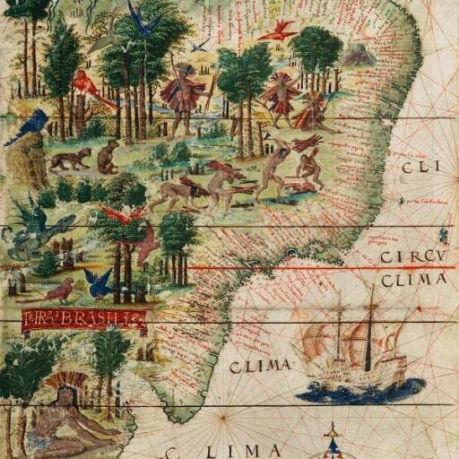

Brasil Colonial
A chegada dos portugueses ao Brasil ocorreu em 22 de abril de 1500. Neste dia, navegantes liderados por Pedro Álvares Cabral desembarcaram na região da atual cidade de Porto Seguro. Lá permaneceram do dia 22 de abril a 2 de maio de 1500. O principal testemunho escrito da chegada dos portugueses foi o relato do escrivão Pero Vaz de Caminha, que passou à história como a "Carta de Caminha"..
NavegarFundação Osorio
Baseado em fatos do Brasil Colonial.